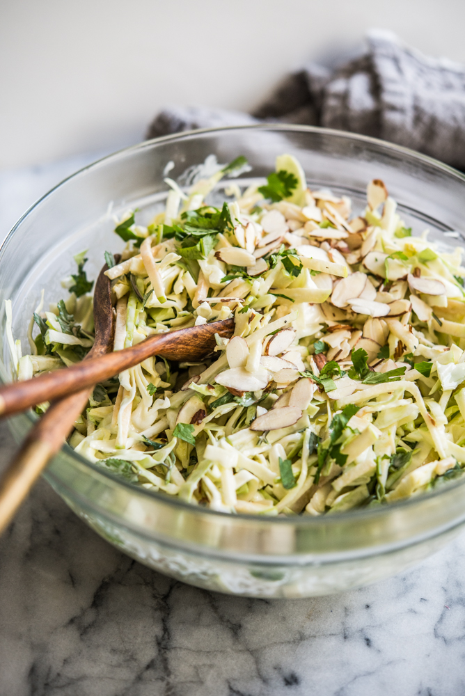

Green Apple Slaw

This green apple slaw is a sweet, cheap, and healthy meal that is perfect for any time of year!
Ingredients
- 1 Cup Mayonnaise (may use more)
- 3 tbsp honey
- 1 tsp poppy seeds
- 4 Granny Smith Apples, quartered and thinly sliced
- 1-2 tbsp lemon juice
- 2 cups coarsely chopped cabbage
- 3/4 cup seedless green grapes, halved
- 3/4 cup thinly sliced celery
Directions
- In a small bowl, mix together mayonnaise, honey, and poppy seeds.
Set aside.
- In a large salad bowl, combine apples and lemon juice; toss to combine.
Stir in cabbage, grapes, and celery. Pour dressing over mixture; toss
gently to coat. Cover with plastic wrap or foil and chill in
refrigerator from 1 to 24 hours before serving.